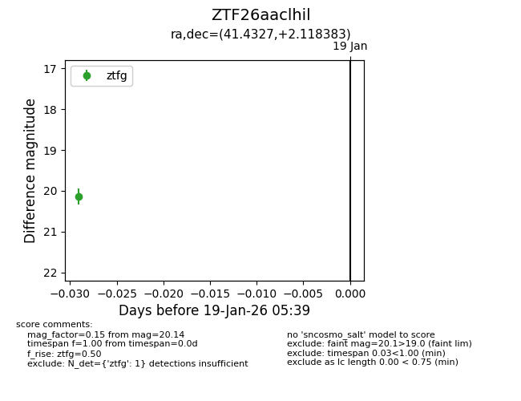
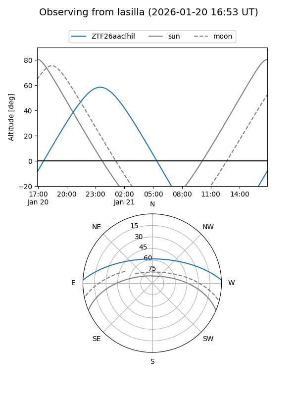
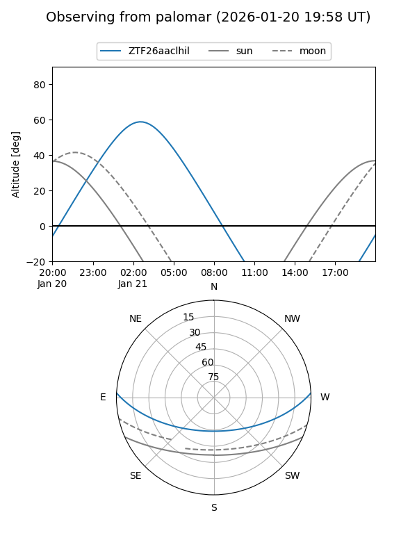

ZTF26aaclhil
Target ZTF26aaclhil at 2026-01-21 05:40
Aliases and brokers:
FINK: link
Lasair: link
ALeRCE: link
alt names
ZTF26aaclhil (ztf,fink_ztf)
Coordinates:
equatorial (ra, dec) = 41.4327,+2.11838
equatorial (HMS+DMS) = 02:45:43.84,+02:07:06.18
galactic (l, b) = (170.7523,-49.83626)
Flags:
Photometry:
last ztfg=20.14
1 ztfg detections
Lightcurve

Visibility


Additional plots